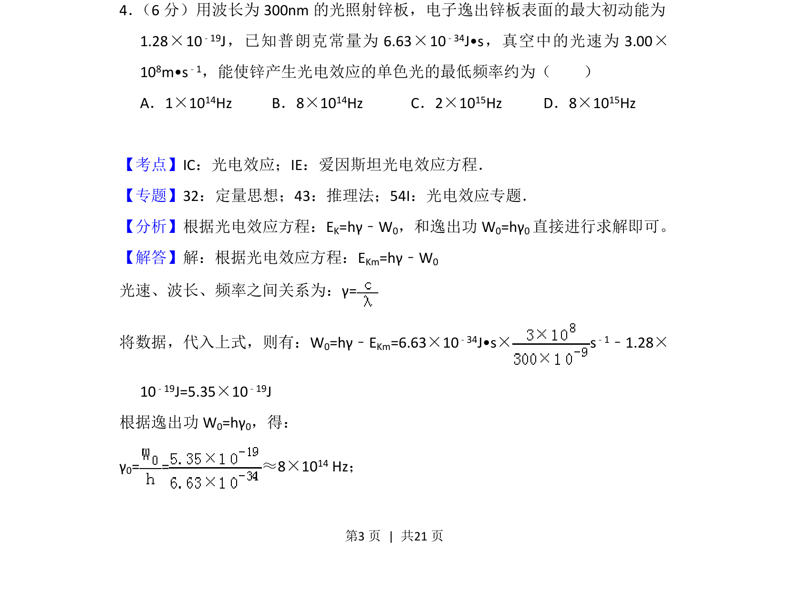
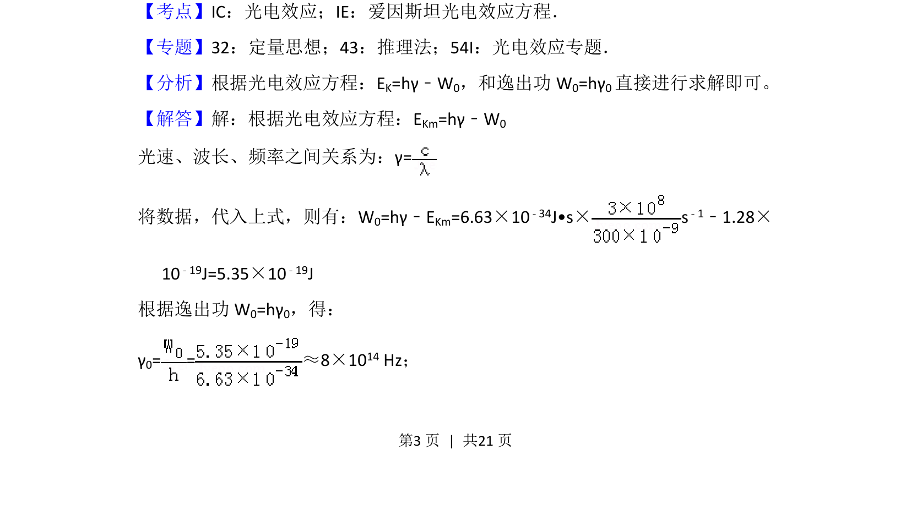
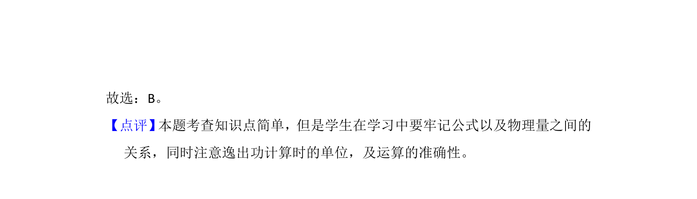

考点：光电效应 光电效应方程 逸出功 频率

本题考查光电效应现象及爱因斯坦方程的应用，通过求解逸出功和极限频率计算最低频率。


📄 原 PDF 第 3 页：
素材/真题/吉林/2008-2024·（吉林）物理高考真题/2018年高考物理试卷（新课标Ⅱ）（解析卷）.pdf
4． （6分）用波长为300nm的光照射锌板，电子逸出锌板表面的最大初动能为 1.28×10 ﹣19J，已知普朗克常量为6.63×10 ﹣34J•s，真空中的光速为3.00× 108m•s﹣1，能使锌产生光电效应的单色光的最低频率约为（ ） A．1×1014Hz B．8×10 14Hz C．2×10 15Hz D．8×10 15Hz
【考点】IC：光电效应；IE：爱因斯坦光电效应方程．菁优网版权所有 【专题】32：定量思想；43：推理法；54I：光电效应专题． 【分析】根据光电效应方程：EK=hγ﹣W0，和逸出功W 0=hγ0直接进行求解即可。 【解答】解：根据光电效应方程：EKm=hγ﹣W0 光速、波长、频率之间关系为：γ= 将数据，代入上式，则有：W0=hγ﹣EKm=6.63×10﹣34J•s×s ﹣1﹣1.28× 10﹣19J=5.35×10﹣19J 根据逸出功W 0=hγ0，得： γ0= =≈8×10 14 Hz；